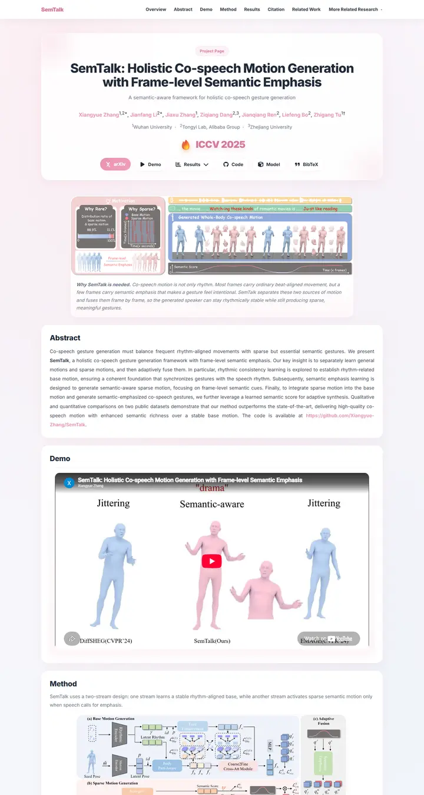

SemTalk: Holistic Co-speech Motion Generation with Frame-level Semantic Emphasis
Cherry blossom on frosted glass: soft pink washes drift behind white cards, and every link, badge and best number blushes the same sakura pink.

Checked against the rendered page. No footer on the page.
Why it is here
Soft pink card system with sticky nav, rounded sections and a cohesive accent colour. Hero, teaser and demo are framed cleanly and the rhythm stays consistent.
Overview
Color Palette
Typography
Inter
SemTalk: Holistic Co-speech Motion Generation with Frame-level Semanti
Abstract · Method · Results · BibTeX — 0123456789
Spacing & Shape
Page Modules
Guidelines
More like this

CRAFT: Training-Free Cascaded Retrieval for Tabular QA
A tidy product manual in pale blueprint blue, where every stage wears its own colored edge.

Efficient Self-Evaluation for Diffusion Language Models via Sequence Regeneration
A tidy stack of rounded cards washed in a blue-violet-apricot dawn, signed with a gradient wordmark.

FIGMA: Towards FIne-Grained Music retrievAl
A music journal on warm paper: a heavy Newsreader headline under a red kicker, big red serif numerals for the results, and figures resting in soft cream frames.

GuideDog: A Real-World Egocentric Multimodal Dataset for Blind and Low-Vision Accessibility-Aware Guidance
A quiet monograph page: one serif column, oxblood ink for the links, and a table that blushes only at its own row.

LaMI: Augmenting Large Language Models via Late Multi-Image Fusion
A careful conference handout: Noto Serif headings, navy outlined buttons and soft grey bands taking turns.

PairCoder++: Pair Programming as a Universal Paradigm for Verified Code-Driven Multimodal and Structured-Artifact Generation
A crisp white product page: a blue announcement strip, ink-black pill buttons and every figure on a soft-shadowed card.